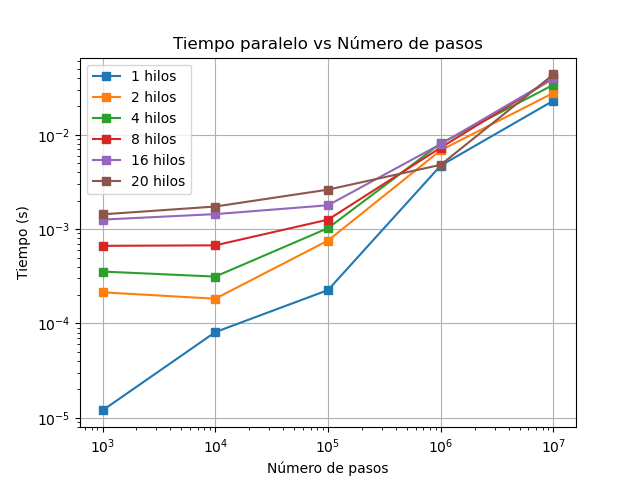
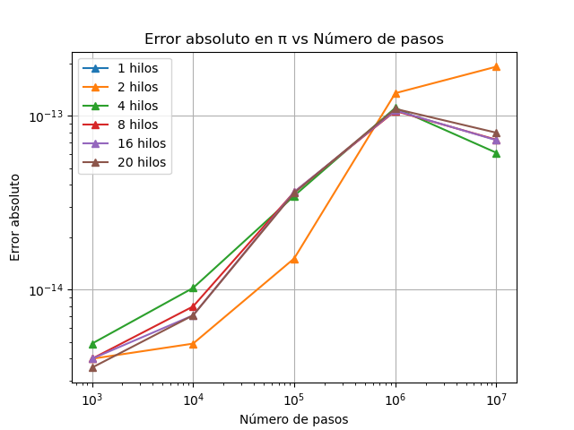

Visualización de Resultados - Secuencial con OpenMP
1. Speedup vs Número de Hilos
Comparación del speedup obtenido al aumentar el número de hilos, para distintos tamaños de muestra.
2. Tiempo Paralelo vs Número de Pasos

Tiempo de ejecución paralela en función del número de pasos, usando diferentes cantidades de hilos.
3. Error Absoluto en π vs Número de Pasos

Precisión del valor estimado de π a medida que aumentan las Pasos, diferenciando por hilos.
Volver
Volver al Inicio